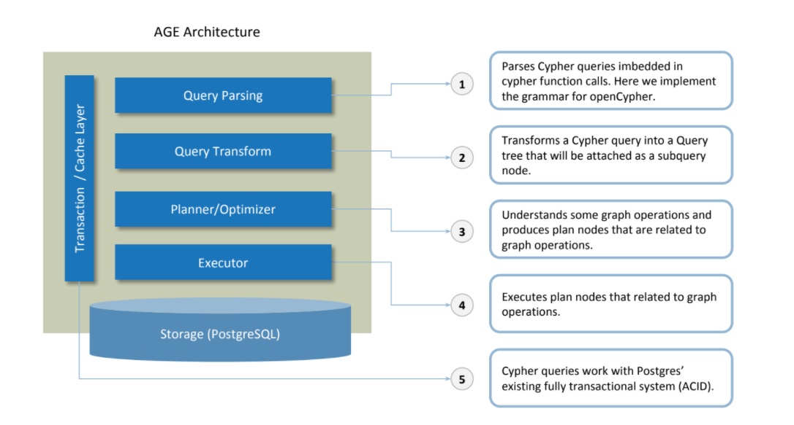

Apache AGE (Incubating)
Apache AGE a PostgreSQL extension that provides graph database functionality. AGE is an acronym for AgensGraph Extension, and is inspired by Bitnine's fork of PostgreSQL 10, AgensGraph, which is a multi-model database. The goal of the project is to create single storage that can handle both relational and graph model data so that users can use standard ANSI SQL along with openCypher, the Graph query language.
Below is a brief overview of the AGE architecture in relation to the PostgreSQL architecture and backend. Every component runs on the PostgreSQL transaction cache layer and storage layer. 
Features
- AGE is currently being developed for the PostgreSQL 11 release and will support PostgreSQL 12 and 13 in 2021 and all the future releases of PostgreSQL.
- AGE supports the openCypher graph query language and label hierarchy.
- AGE enables querying multiple graphs at the same time. This will allow a user to query two or more graphs at once with cypher, decide how to merge them and get the desired query outputs.
- AGE will be enhanced with an aim to support all of the key features of AgensGraph (PostgreSQL fork extended with graph DB functionality).
License
Roadmap
| v0.1.0-alpha ✅ | |
| Release Date | 2020 Q1 |
| Release Notes | https://github.com/apache/incubator-age/releases/tag/v0.1.0 |
| Functionality |
|
| v0.2.0-alpha ✅ | |
| Release Date | 2020 Q2 |
| Release Notes | https://github.com/apache/incubator-age/releases/tag/v0.2.0 |
| Functionality |
|
| v0.3.0-alpha ⌛ | |
| Release Date | Target 2020-12-31 |
| Release Notes | N/A |
| Functionality |
|
| v0.4.0-beta | |
| Release Date | Target 2021-02-28 |
| Release Notes | N/A |
| Functionality |
|
| v1.0.0-incubating (first stable release) | |
| Release Date | Target 2021-02-28 |
| Release Notes | N/A |
| Functionality | N/A |
* Support for PostgreSQL 12+ and VLE will be added in the later releases in 2021.
Installing AGE
Using Docker
Installing from source
Getting Started
Loading AGE
Using AGE
How to contribute
Becoming a Committer
Contributing by Helping Other Users
Contributors should subscribe to this list and follow it to keep up to date on what's happening in AGE. Answering questions is an excellent and visible way to help the community, which also demonstrates your expertise.
Contributing by Reviewing Changes
Contributing Documentation Changes
Contributing Bug Reports
Bug reports are only useful, however, if they include enough information to understand, isolate and ideally reproduce the bug. Simply encountering an error does not mean a bug should be reported; search JIRA and inquire on the AGE user / dev mailing lists first. Unreproducible bugs, or simple error reports, may be closed.
The more context the reporter can give about a bug, the better, such as: how the bug was introduced, by which commit, etc. It assists the committers in the decision process on how far the bug fix should be backported, when the pull request is merged. The pull request to fix the bug should narrow down the problem to the root cause.
Data correctness/data loss bugs are very serious. Make sure the corresponding bug report JIRA issue is labeled as correctness or data-loss. Please send an email to dev@age.apache.org after submitting the bug report, to quickly draw attention to the issue.
Performance issues are classified as bugs. The pull request to fix a performance bug must provide a benchmark to prove the problem is indeed fixed.
Contributing to JIRA Maintenance
When resolving JIRA tickets, please observe the following conventions:
-
Resolve as Fixed if there's a release or code commit that resolved the issue.
- Set Fix Version(s), if and only if the resolution is Fixed
- Set Assignee to the person who contributed the most to its resolution, usually the person who opened the PR that resolved the issue.
- For issues that can't be reproduced against master as reported, resolve as Cannot Reproduce.
-
If the issue is the same as or a subset of another issue, resolved as Duplicate
- Mark the issue that has less activity or discussion as the duplicate.
- Link it to the JIRA ticket it duplicates.
- If the issue seems clearly obsolete and applies to issues or components that have changed radically since it was opened, resolve as Not a Problem
- If the issue doesn't make sense or is not actionable resolve as Invalid.
- If it's a coherent issue, but there is a clear indication that there is no support or interest in acting on it, then resolve as Won't Fix.
Searching JIRA How to search JIRA for existing issues:
- Basic:
- Visit AGE JIRA
- Type query into search box in top right (beware this will return results from all projects)
-
Advanced:
- Visit AGE JIRA Advanced Search
- Replace the empty quotes with quoted text (such as "cypher")
-
Search Now:
- Use the search box below
Developer Guidelines
Code Review Process
- Make a commit (or multiple commits) on your local branch.
- Create .patch file(s) of the commit(s).
- Use git format-patch command.
- Send the .patch file(s) to the reviewer.
- The title of the email must be "[Review] [JIRA Ticket Name Here] summary-of-the-issue"
(e.g. [Review] [JIRA Ticket Name] Support changing graph name)- If the commit is not for any issues on JIRA, omit " [JIRA Ticket Name Here]". OR make a JIRA ticket
- The email body will look like this:
Commit bef50e5d86d45707806f5733695a229f3e295b1a [one blank line] Description
-
The first line is the hash code of the base commit, NOT the commit you've created.
- This will help reviewers to quickly apply the .patch files.
- Put proper information to help the reviewer.
-
The first line is the hash code of the base commit, NOT the commit you've created.
-
Attach .patch files.
- Do NOT rename files. They are named with numbers in order.
- Do NOT compress them unless the total file size is over 5MB.
- The title of the email must be "[Review] [JIRA Ticket Name Here] summary-of-the-issue"
- Reply to the last email in the same thread to send a review of it.
- You can attach some .diff files.
- Reply to the last email in the same thread to send updated patch(es) and opinions.
- If you rebase commits, state the hash code of the new base commit.
- Repeat 4 and 5.
How to Merge a Pull Request
Single Commit for a Single Task
In this case, the commit will be merged into the master branch with the following process.-
Change the current working branch to the local master branch by running the following command.
$ git checkout master
- Make the local master branch up-to-date by running the following command (or any other commands that result the same.)
$ git pull
- Change the current working branch to the local task branch that the commit resides in by running the following command.
$ git checkout
- Rebase the local task branch by running the following command.
$ git rebase master
- Resolve any conflicts that occur during rebase.
- Change the current working branch to the local master branch by running the following command.
$ git checkout master
- Merge the local task branch into the local master branch by running the following command.
$ git merge
Multiple Commits for a Single Task
Keeping Commit HistorySometimes, having logically separated, multiple commits for a single task helps developers to grasp the logical process of the work that had been done for the task. If the commits are merged with fast-forward strategy, the commits will not be grouped together. Therefore, to group the commits, create an explicit merge commit.
In this case, the commits will be merged into the master branch with the same process above except the last step (step 7).
For the last step, the local task branch will be merged into the local master branch with an explicit merge commit by running the following command. If you omit --no-ff option, the command will do fast-forward merge instead.
Code Style Guide
Indentation
- You can see the same indentation in all environments.
For switch statement, see below.
Breaking long lines and strings
Placing Braces and Spaces
Naming
Typedefs
Commenting
For single-line comments, use C++ style single-line comments.
See below.
Macros, Enums, and RTL
- If names are changed or new entries are added, it may produces unnecessary diffs and this makes it harder for you to find lines that are actually modified
- If bodies of macros are modified, it may produce unnecessary diffs and this makes it harder for you to find lines that are actually modified.
- It is harder for you to find lines that are actually modified.
Newlines
Conditions
Rules for ereport()
An error detail/hint message that is passed to errdetail()/errhint() starts with an upper case letter.
Creating Documentation
- Dependencies: python3, python3-sphinx, sphinx_rtd_theme
- Clone incubator-age repository (AGE) (https://github.com/apache/incubator-age)
- Go to the doc folder of the project
- Type make html
- The documents are in _build/html
Mailing Lists
Apache AGE Team Members
✪ Champions and Mentors ✪
AGE's Mentors are (sorted on last name in alphabetical order):
| Name | |
|---|---|
| Raphael Bircher | rbircher at apache dot org |
| Von Gosling | vongosling at apachedot org |
| Jim Jagielski | jim at apache dot org |
| Kevin Ratnasekera | kevin at agsft dot com |
| Felix Cheung |
✰ Committers ✰
AGE's active Committers are (sorted on last name in alphabetical order):
| Name | |
|---|---|
| John Gemignani | john dot gemignani at bitnine dot net |
| Josh Innis | josh dot innis at bitnine dot net |
| Eya Badal | eya dot abdisho at bitnine dot net |
✧ Contributors ✧
AGE's Contributors are (sorted on last name in alphabetical order):
| Name | |
|---|---|
| Ghassan Al-Noubani | g.noubani at qbs dot jo |
| Jasper Blues | jasper at liberation dash data dot com |
| Dehowe Feng | |
| Andrew Ko | andrew dot ko at bitnine dot net |
| Duane Nickull | duane at webstationhq dot com |
| Mason Sharp | mason dot sharp at gmail dot com |
| Nick Sorrell | nick at canvouch dot com |
| Junseok Yang | jsyang at bitnine dot net |